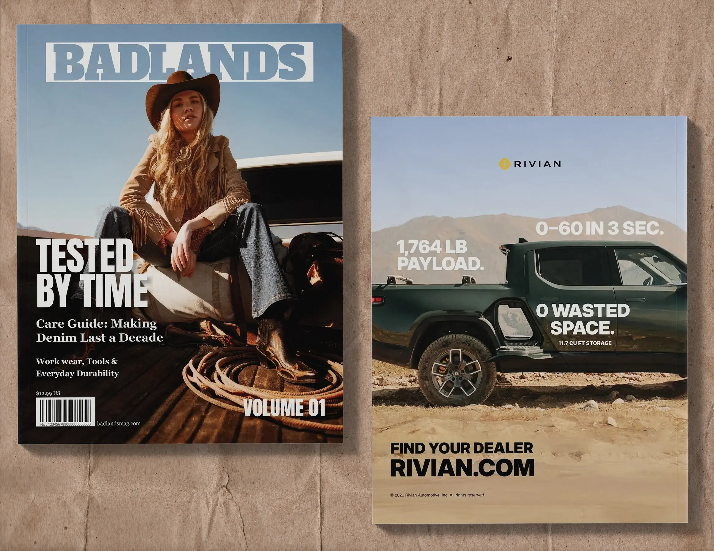
Overview
Badlands is a magazine brand concept exploring the craftsmanship, stories, and everyday lives of people working across rural landscapes. The project expanded beyond the magazine into a brand identity, apparel, website, and first-release event.
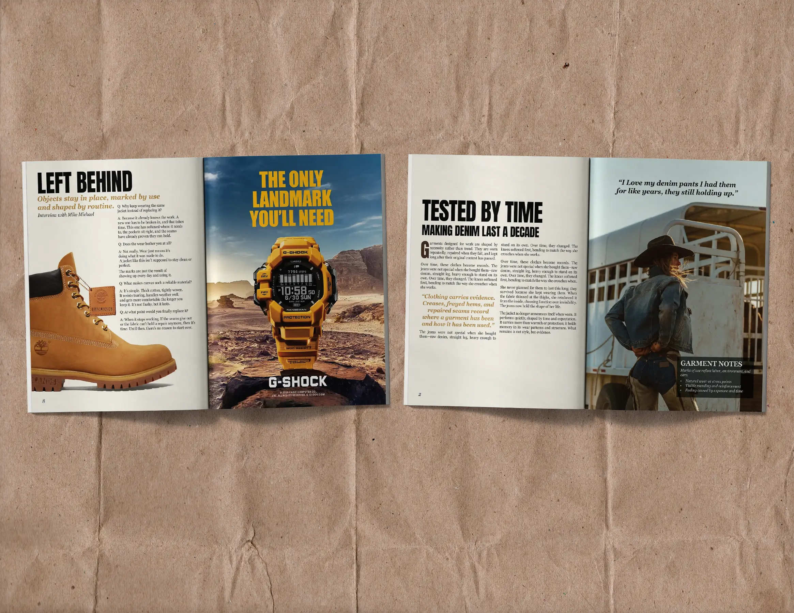
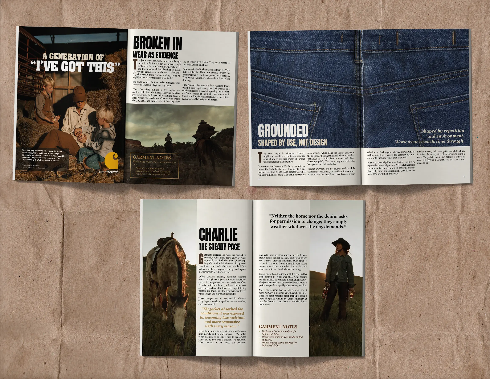
Goal
For this advanced typography project, I was asked to develop a memorable and lasting brand around a chosen theme and audience. I wanted to explore a rough, Western-inspired aesthetic while still making the brand feel refined and intentional.
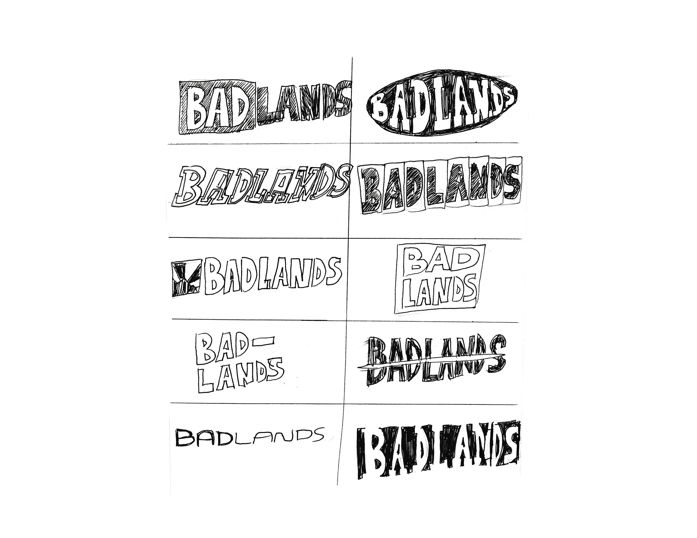
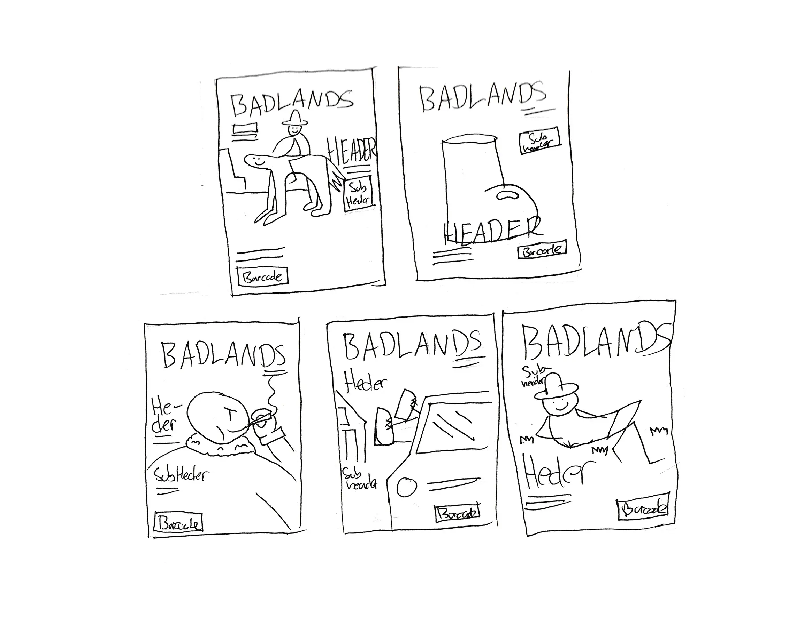
Process
Through research, I found an interest in the rugged aesthetic that has become popular with younger audiences through brands. I used that as a starting point, combining rough textures, Western influences, and strong bold typography with a focus on quality and craftsmanship. The idea was to create something that felt worn-in and authentic, but still well-made—reflecting the long-lasting clothing and hardworking people that inspired the brand.
Outcome
The final identity came together across the magazine, brand guide, apparel, and digital experience. The project became one of my favorite pieces because the final work closely reflected the original direction and concept I set out to create.
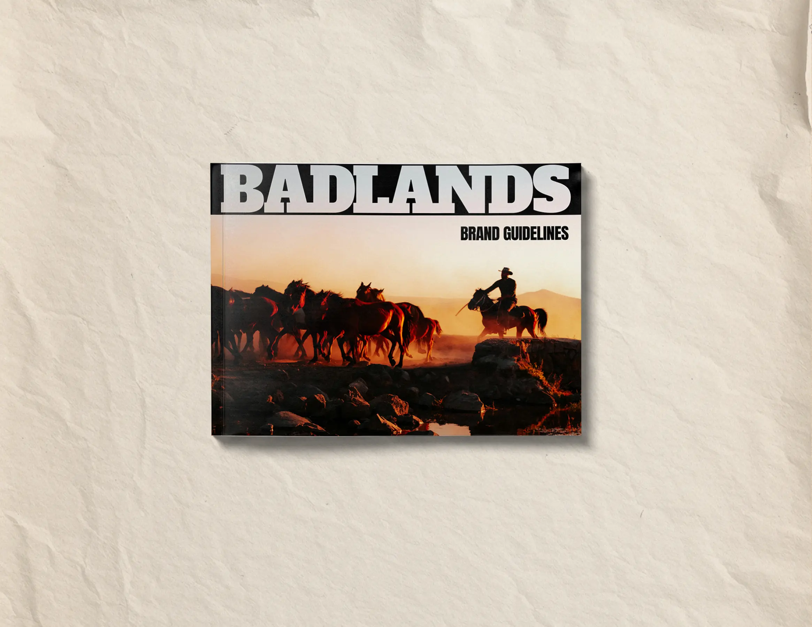
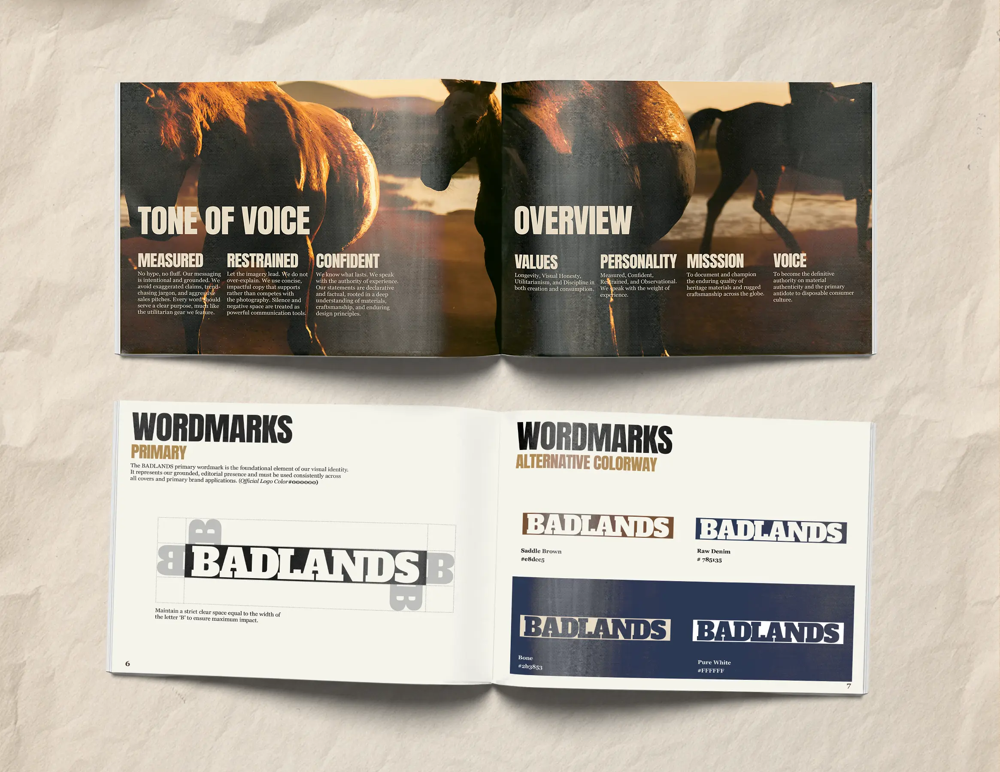
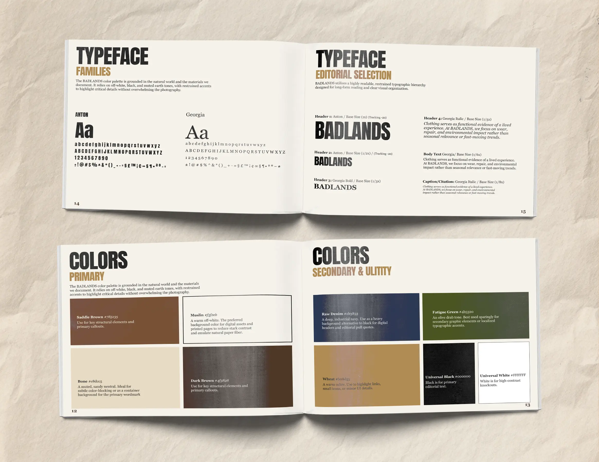
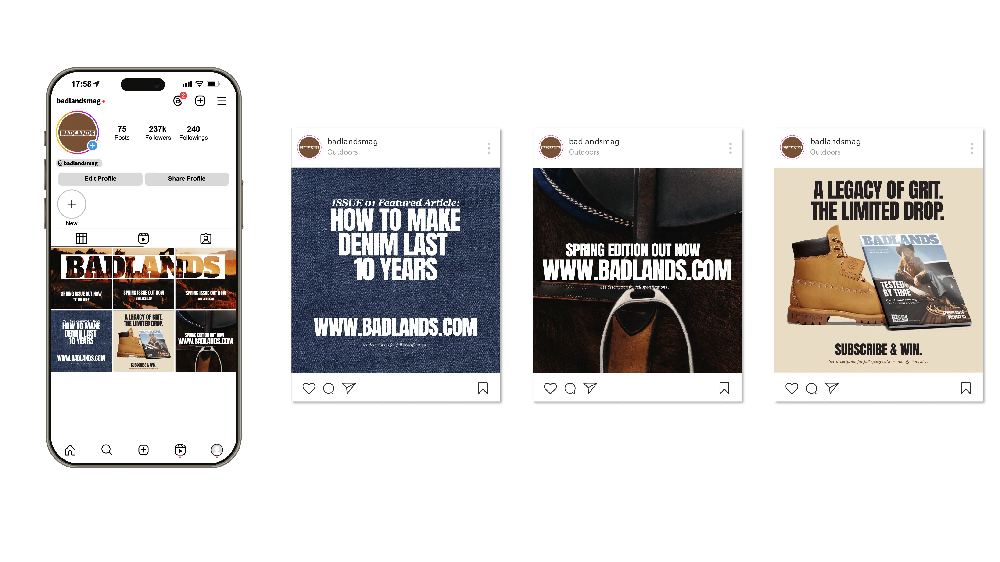
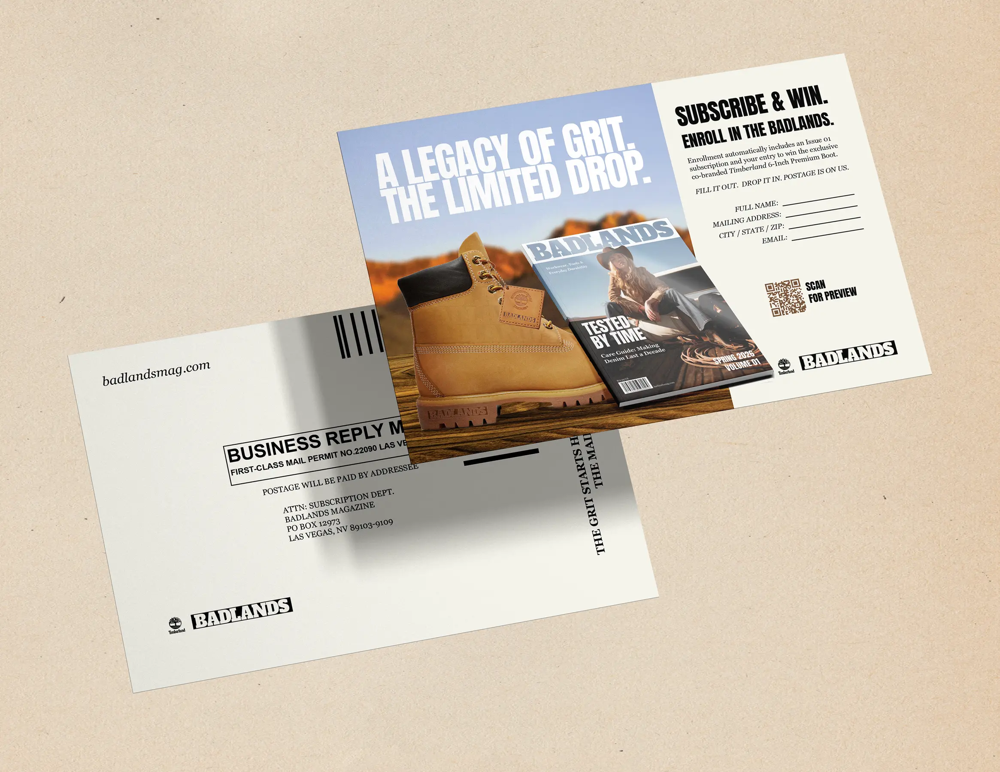
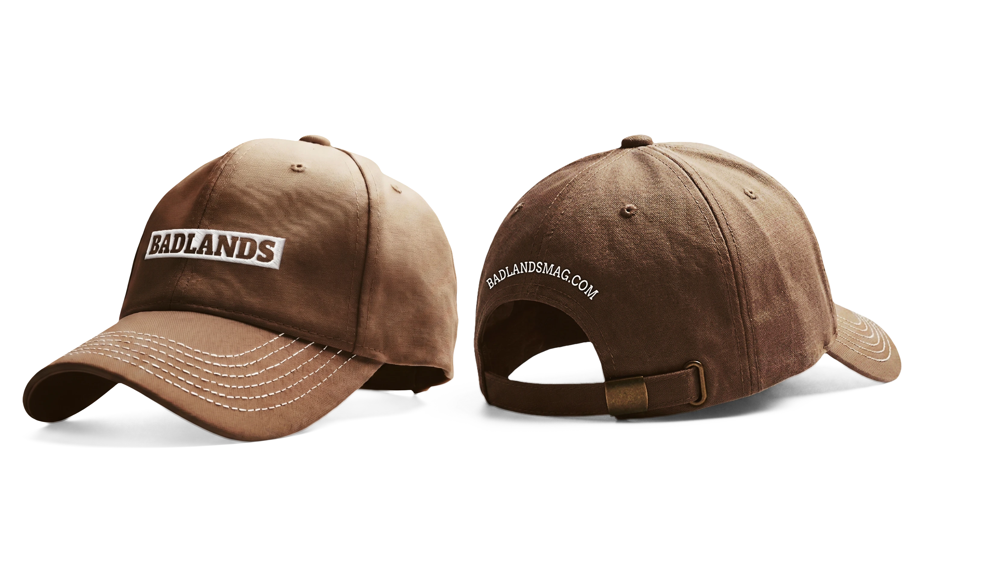